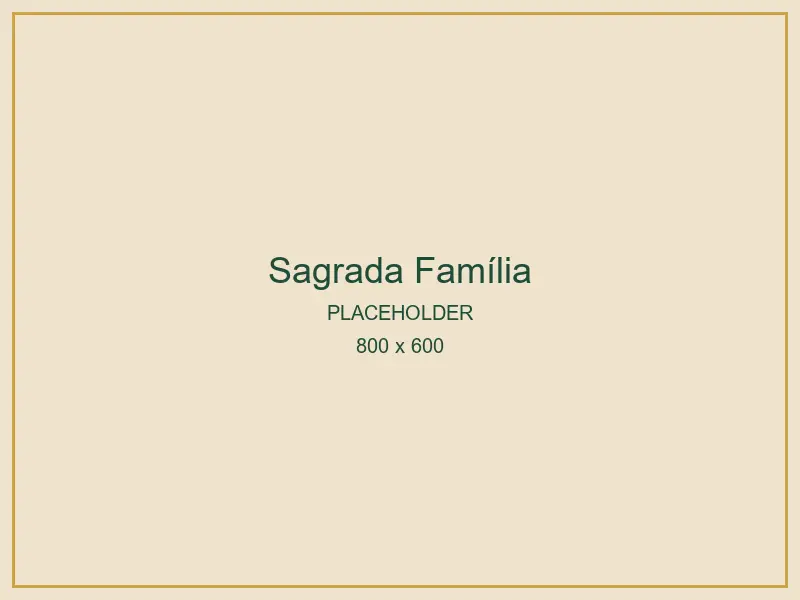
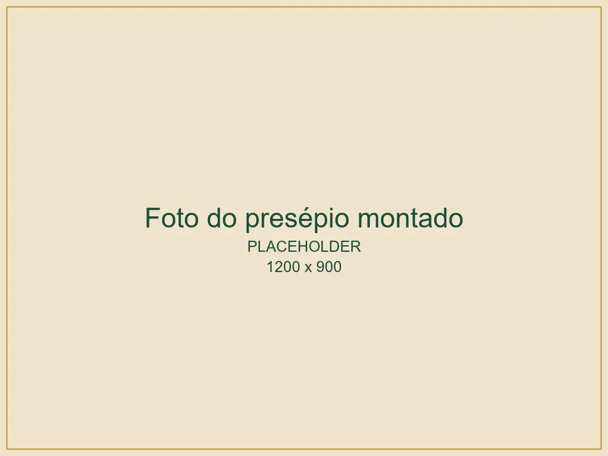
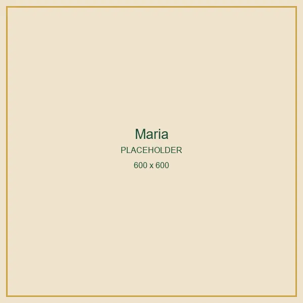
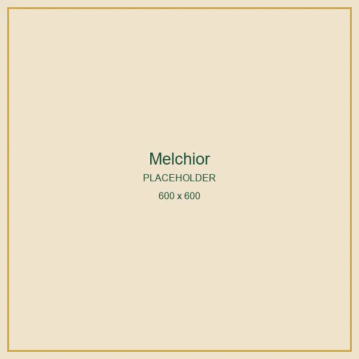
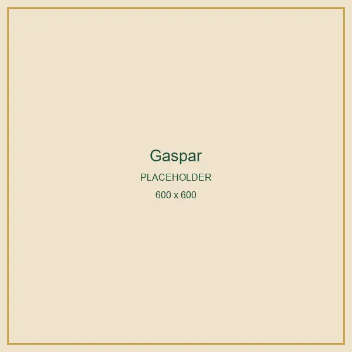
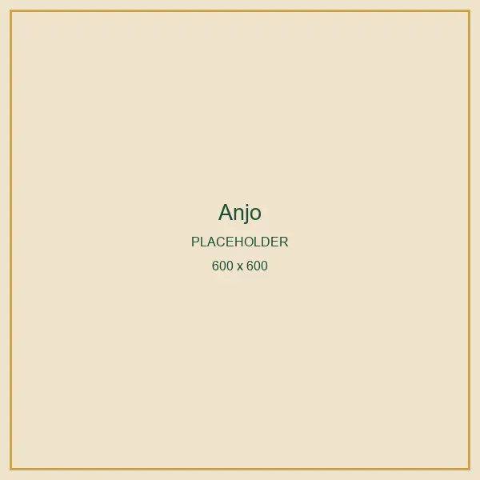
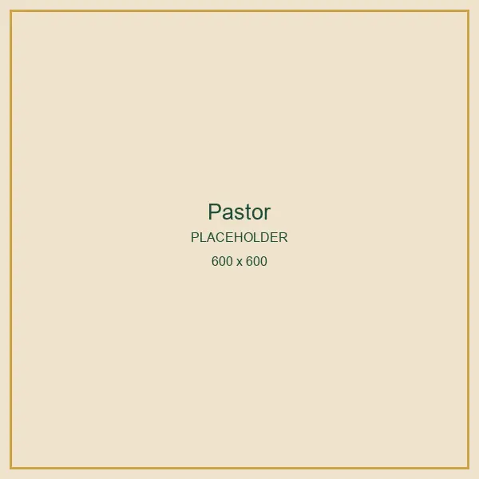
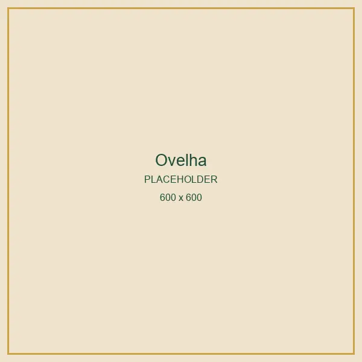
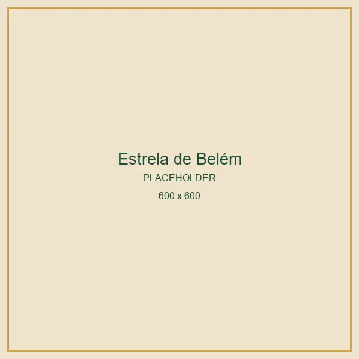

3 peças
Sagrada Família
Menino Jesus com manjedoura, Maria e José. Um começo perfeito para quem quer ver o presépio tomar forma.
Guia digital com 12 peças em amigurumi, passo a passo com fotos.

Quero meu presépioSem pressa e sem complicação: o guia foi feito para você crochetar com calma, uma etapa de cada vez.
Faça primeiro o coração do presépio. Quando quiser, complete a cena.

Menino Jesus com manjedoura, Maria e José. Um começo perfeito para quem quer ver o presépio tomar forma.
A Sagrada Família, os três reis magos, anjo, pastor, ovelha, boi, burrinho e a estrela de Belém.
Comece pela que mais mexe com você. Cada peça tem o seu próprio passo a passo.
Você já sabe quais cores e materiais comprar antes de começar.
Cada etapa tem foto, então dá para conferir se o seu trabalho está igual.
Com as peças prontas, é só arrumar o presépio no lugar de honra da casa.
Todas as peças que você vai aprender a fazer, com o tamanho de cada uma depois de pronta.







Letra grande, fotos claras e cada etapa no seu lugar.
A Crochêtando nasceu do gosto de fazer com as mãos aquilo que fica para a família. Cada peça deste presépio foi criada, testada e fotografada etapa por etapa para que você consiga chegar ao mesmo resultado na sua casa.
[CRÉDITO DA CROCHETEIRA]
Pagamento único. Você recebe o guia no seu e-mail.
Presépio inteiro
R$27,90
12 peças
R$14,90
Sagrada Família, 3 peças
Garantia de 7 dias: se não gostar, peça o reembolso.
No app do banco, o recebedor aparece como Cakto.
Feito por você, guardado com carinho e montado de novo a cada dezembro, perto de quem você ama.
Quero meu presépioNão precisa ser experiente. O guia usa pontos básicos do amigurumi e mostra cada etapa com fotos, então dá para acompanhar no seu ritmo, uma peça de cada vez.
[FIOS E AGULHA RECOMENDADOS]. No plano Completo, o guia de fios e cores e a lista de compras mostram exatamente o que comprar para cada peça.
Assim que o pagamento é aprovado, o link do guia chega no e-mail que você informou na compra, em alguns minutos. Se não aparecer, confira a caixa de spam ou escreva para [E-MAIL DE SUPORTE].
Não. É um produto digital: você recebe o guia para fazer as peças. Fios e materiais não estão inclusos.
[REGRA DE VENDA DAS PEÇAS]
Você tem 7 dias a partir da compra. Se não gostar do guia, peça o reembolso pelo e-mail [E-MAIL DE SUPORTE] e o valor é devolvido.
Espera: leve o Presépio Completo por R$ 19,90.
Quero o Completo por R$ 19,90